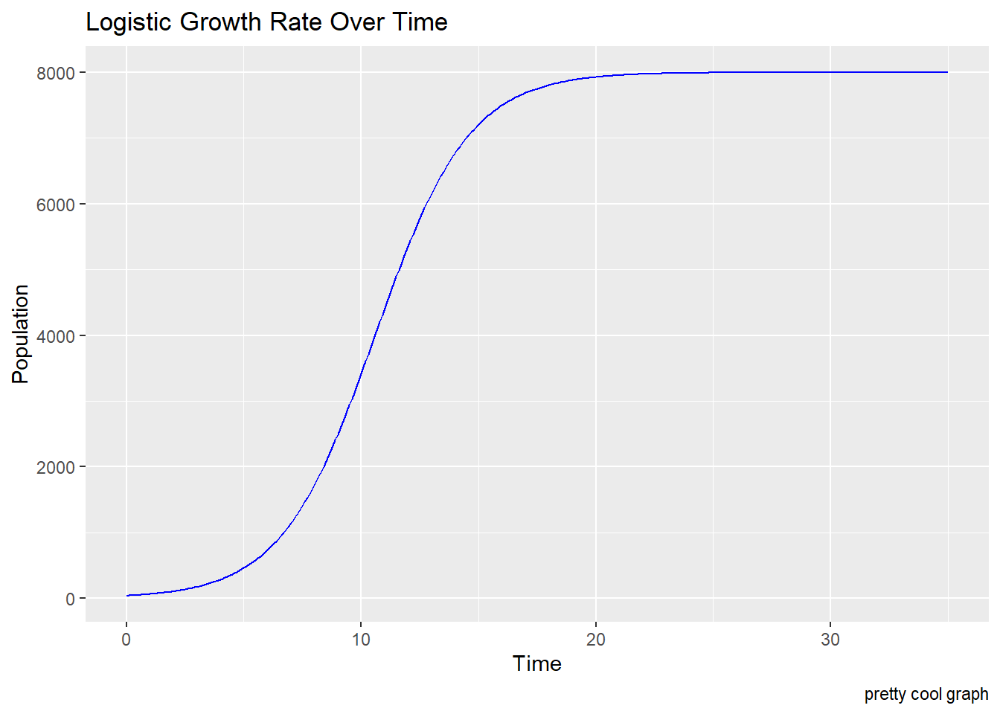
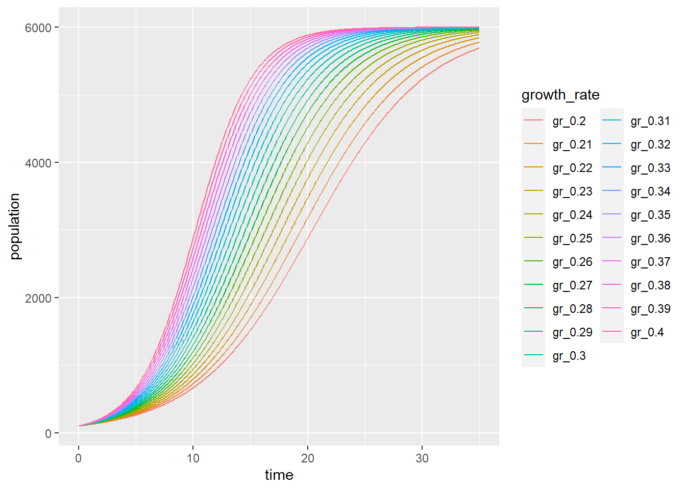

# You run 2 miles, and these are your quarter mile splits (in minutes)quarter_splits <-c(1.0, 1.1, 1.2, 1.1, 1.4, 1.5, 1.6, 1.4)# Write a for loop that returns your total time for any two consecutive quarter milesfor (i inseq_along(quarter_splits)) { half_mile_time = quarter_splits[i] + quarter_splits[i +1]print(half_mile_time)}
logistic_growth <-function(K, N0, r, time) { K / (1+ ((K - N0) / N0) *exp(-r * time))}# Test:logistic_growth(K =5000, N0 =100, r =0.07, time =42)
[1] 1392.594
time_vec <-seq(from =0, to =35, by =0.1)pop_35 <-logistic_growth(N0 =40, K =8000, r =0.5, time = time_vec)pop_time35_df <-data.frame(time_vec, pop_35)ggplot(data = pop_time35_df, aes(x = time_vec, y = pop_35)) +geom_line(color ="blue") +labs(x ="Time", y ="Population", title ="Logistic Growth Rate Over Time", caption ="pretty cool graph")

pop_35_vec <-vector(mode ="numeric", length =length(time_vec))for (i inseq_along(time_vec)) { population <-logistic_growth(N0 =100, K =6000, r =0.27, time = time_vec[i]) pop_35_vec[i] <- population}pop_35_vec
Now extend this to iterate over multiple growth rates.
r_seq <-seq(from =0.20, to =0.4, by =0.01)#write over a nested for loop
out_matrix <-matrix(nrow =length(time_vec), ncol =length(r_seq))for (i inseq_along(r_seq)) {for (j inseq_along(time_vec)) { pop <-logistic_growth(N0 =100, K =6000, r_seq[i], time_vec[j]) out_matrix[j, i] <- pop }}### Not some wranglinglogistic_df <-data.frame(out_matrix, time = time_vec)# update column namescolnames(logistic_df) <-c(paste0("gr_", r_seq), "time")# Create a data.frame where each variable only has a singe column (variables = population, time, growth rate)logistic_df_long <- logistic_df |>pivot_longer(cols =-time, values_to ="population", names_to ="growth_rate")ggplot(data = logistic_df_long, aes(x = time, y = population)) +geom_line(aes(color = growth_rate))

A function with warnings and an error message
Use warning to add a warning.
Use stop to add an error.
P=0.3|rhoAv^3
rho: air density (kg/m3)
A: rotor radius (m)
v: wind velocity (m/s)
calc_windpower <-function(rho, radius, windspeed) {if (windspeed >130) {warning("Whoa, that's really dast. Are you sure?")}if (rho >1.225) {warning("That air density is suspicious")}if (radius <0) {stop("Rotor radius must be a positibe value (meters)") }0.3*rho*pi(radius^2)*(windspeed^3)}